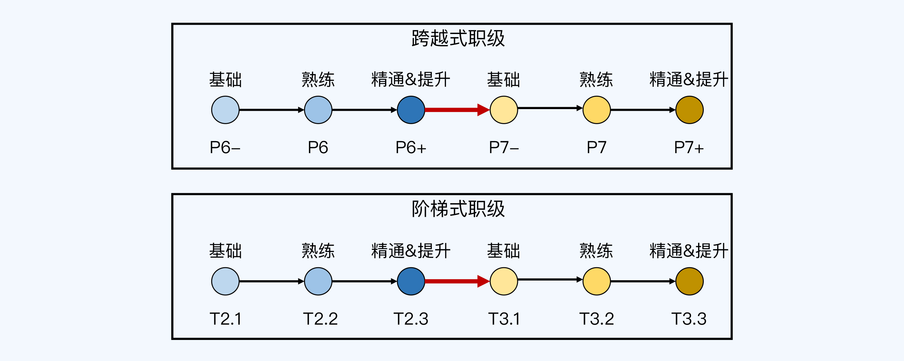

04 | 晋升逻辑：别人怎么判断你有没有达到晋升要求？
你好，我是华仔。
上一讲我介绍了晋升的三大原则，分析了什么样的人更容易晋升，帮你明确了努力的方向。但是努力提升之后，你的能力到底有没有达到晋升的要求呢？
也许你自己信心满满，但评审的人不一定认可你的能力。如果你的直接主管不认可，你连被提名的机会都没有；如果部门内的管理者不认可，你在预审的时候就会被刷掉；而如果评委团不认可，你在评审阶段还是会倒下。
那么，什么样的能力水平才经得起不同评审者和不同视角的考核，怎样才能几乎没有争议地顺利晋升呢？
针对这个问题，我将用连续3讲的篇幅为你给出完整的回答。今天的第4讲，先带你认清判断能力最本质的底层逻辑；第5讲，会教你掌握一套把能力要求具体化的通用模型；第6讲，会带你纵向地透视不同层级对能力的核心要求。
一些看似客观的常见做法
接下来，我们就从判断能力的一些常见做法开始讲起。
在第2讲介绍晋升流程的时候，我曾经说过，在评审阶段正式判断你的能力是否达到晋升要求的是评委团。
但是在这之前的提名和预审阶段，判断你能力的人，是你的主管，可能还有HR、经理和总监等。这些人并不会像评委那样通过将近一个小时的时间来仔细确认你有没有达到晋升要求，而是会结合你的晋升材料，凭主观感觉来判断。
实际上，主管等人通过主观感觉来判断你能力的时候，他们的心理压力也很大。因为没有统一的客观标准，就很容易出现说服力不足的问题。
对于没有掌握正确判断方法的人来说，为了避免在提名或预审阶段引起争议，他们可能会采取简单粗暴的逻辑，完全以客观条件为标准。常见的做法，有下面3种。
第1种是以当前级别的年限为标准。比如同样都是P6，你在这个级别待了2年了，而坐你隔壁的老王已经待了4年了，你的主管可能会优先提名老王去晋升。这也是很多人私底下吐槽的“优先保老员工”的现象。
第2种是以工作年限为标准。它跟第1种有点像，区别在于它看的是总的工作年限，而不只是在当前级别的工作时间。这也有一定的合理性，因为一些社招员工虽然来公司时间不长，但是他们之前就已经积累了很多工作经验，跟新人还是不一样的。
第3种是以绩效为标准。简单地说，就是把绩效跟能力直接挂钩，绩效好就可以去申请晋升。这样做最方便，因为绩效结果是明确的。
你可能对这些做法很熟悉，甚至觉得很有道理，但其实它们都只是看似客观而已。
因为年限和绩效这些条件虽然都是确定的、可以量化的，但是它们跟能力并没有直接的正相关关系。在晋升体系完备的大公司，我从来没见过评委最后靠这些条件，来判断申请者的能力有没有达到晋升要求；相反，评委们在最后总结的时候，会特别提醒主管以下两个要点：
无论什么年限都不是我们判断能力的标准。花1年时间掌握某项技能然后重复9年，和10年时间不断在提升，两者的能力差距是巨大的。
绩效不能等同于能力。绩效好有很多种可能的原因，能力强只是其中之一。更何况，公司已经在工资/奖金/股票方面对绩效进行了回报。至于晋升，它是对“能力提升”的一种认可，不能拿来作为绩效的回报。换句话说，绩效关注的是业务结果，晋升关注的是能力提升。某些人可能在当前级别做事得心应手，可以拿到很好的绩效，但是能力并没有本质的提升。
第一条逻辑：提前做下一级别的事
既然如此，在“互联网大厂”，评委们怎么判断你有没有达到晋升的要求呢？其实很简单，他们会审查你做过的事情，看看是不是体现了下一级别需要的能力。
这就是我分享的第一条晋升逻辑：在当前级别做下一级别事情的人，才有机会晋升。
这条逻辑可能会颠覆你对晋升和工作任务安排的认知。因为按照大部分人的想法，什么级别就做什么事情，只要做好了当前级别的事情，就可以申请晋升，然后到下一级别再去做下一级别的事情。
然而实际情况是，你得提前做下一级别的事情，做好了才能申请晋升。这也就解释了为什么很多P6和P7做的事情差不多的现象。
所以，如果要判断自己是不是能够申请晋升了，一种简单有效的方式是，看你做的事情是不是和下一级别的人类似。想晋升的P6就对比P7，想晋升的P7就对比P8……以此类推。
举个例子，在很多大厂，如果你是P6级别的技术人员，想要申请P7，必须要“带过小项目或者小团队”（3～5人左右）才有机会。如果你一直只是完成别人安排的项目任务，就算做得很熟练，也很难获得提名；就算主管帮你提名了，答辩的时候也很难通过。
第二条逻辑：做好当前级别的事
学完第一条晋升逻辑，你可能会想到一条晋升的捷径：晋升通过之后，立刻跟主管要求安排下一个级别的工作。这样你就可以按照下一级别的要求来提升自己的能力，很快就能迎来下一次晋升。
想的是挺美的，但是很遗憾，现实中这样做是行不通的。原因在于，就算是同一个级别，不同的人能力也还是有差异的。主管不敢把下一个级别的事情直接交给刚晋升的人来做。
所以我们还需要补充第二条晋升逻辑：只有把当前级别的事情做好了，才有机会晋升。
你可能会有疑问：我都晋升这个级别了，肯定已经具备这个级别的能力了，把这个级别的事情做好，不是理所当然的吗？
其实，真实的晋升逻辑并不是这样理解的。晋升成功只是意味着你的能力达到了当前级别的基础水平，但还不一定有熟练和精通的程度。如果你还想要晋升到下一个级别，就必须先在当前级别达到精通。
- 如果是跨越式职级体系，同级的人其实会被分为几档，例如“P6-/P6/P6+”、“T2C/T2B/T2A”。（也有的公司会分为ABCD四档，但B和C的差异很难确定，所以我不推荐这种方式，这里也不多做介绍了。）
- 如果是阶梯式职级体系，同级不同等的人本来就是按照“基础”“熟练”和“精通”来区分的，比如腾讯旧职级体系下的T2.1/T2.2/T2.3。
虽然这些档次不一定在管理系统中体现出来，但是在HR和主管的心里一般都会有这样一个级别的划分的。下图展示了这种划分的方式：

我们可以看到，只有到了精通的程度，你才有机会晋升下一级别。换句话说，只有到了精通的程度，主管才会把下一级别的任务安排给你。这就像游戏王者荣耀一样，在星耀段位内部，还分了星耀V到星耀I一共5个等级，只有星耀I的玩家才能去打王者段位的晋级赛。
这也是我把P6+和T2.3级别标注为“精通&提升”的原因。因为这个级别的人，既要做当前级别的事情（因为达到了精通的程度，做起来效率高），又要去做下一级别的事情（因为达到了精通的程度，要考虑晋升了）。
所以你刚完成晋升之后，不要立刻想着做下一个级别的事，急着晋升到下一级别；而应该先考虑怎么把当前级别的事情做好，把当前级别的能力提升到“精通”的程度。
基础、熟练和精通的区别
刚才我介绍的这两条晋升逻辑，都涉及一个关键的问题：怎么区分基础、熟练和精通呢？
这其实是一个世界难题，到目前为止，还没有明确客观的标准可以直接套用。不过呢，我根据自己的经验和理解，总结出了一套相对比较容易操作的标准。我来简单描述下这套标准，你可以看看是不是很好用。
基础意味着“会做”。如果你会做某个级别要求的事情，就说明已经具备了基础能力。当然，这里的“会”是指能够独立自主地完成，而不是别人想好之后告诉你，你再按照别人的话去做。
熟练意味着“做好”。跟基础不同，熟练是指能够把当前级别的事情做好。做好体现在做事熟练，掌握了做事的最佳实践，能够保证效率和质量，能够拿到好的结果。
精通意味着“优化”。精通是指能够优化当前级别的事情，比如采取不同的方式、思维和工具来做同样的事情，并取得突破。
如果要再区分一下“做好”和“优化”，我们可以这么理解：做好只是意味着掌握了别人总结的成熟经验，而优化意味着你自己创造了新的经验。
什么算“新的经验”呢？并不是说要“全球首创”，而是说在自己所处的环境中（团队、业务线、公司等）是新的。比如“微服务”架构，别的公司可能早就在用了，但如果把它引入到这家公司的人是你，这就算你的优化成果。
另外还要注意的是，我总结的这套标准，是用来判断在某个级别所要求的能力，而不是单项技能的水平。
比如，你从事开发工作，P5/P6的核心职责是项目开发，而项目开发会涉及到业务理解、项目计划、编程语言和 Bug 修复等一系列的单项技能。对于这些具体技能的水平，用技术广度或者技术深度来区分会更合适。
通用的晋升步骤
现在，我们掌握了两条关键的晋升逻辑，知道了主管和评委团是如何判断你有没有达到晋升要求的。再结合第3讲的晋升原则，我们就可以推导出适用于各个级别的通用晋升步骤了。具体来说，分为以下4步：
第1步，按照晋升原则的指导，在当前级别拿到好的结果，为公司创造价值，同时把当前级别要求的能力提升到精通程度（比如从P6-到P6+），这样你才有机会成为晋升备选人员。
第2步，到了精通程度之后，对照下一级别的要求来提升自己的各种能力（比如到了P6+之后，按照P7-的要求来提升自己），为可能的晋升机会做好准备。
第3步，主动寻找工作机会，尝试做下一个级别事情（比如提升了P7的能力之后，找P7级别做的事情来做，争取成为负责人，主导事情的推进和落地），继续拿到好的结果，向主管证明你具备下一级的能力。
第4步，拿到工作结果之后申请晋升，向评委介绍你做过的事情，展示相关的能力和结果，证明自己具备了下一级别要求的能力。
按照这个步骤来，你的晋升肯定就会容易很多。
小结
现在，我们回顾一下这一讲的主要内容。针对能力判断的问题，我剖析了晋升的底层逻辑，并在此基础上提炼了一个通用的行动步骤。你需要记住的重点有这4条：
- 晋升的第一条逻辑是，在当前级别做下一级别事情的人，才有机会晋升。
- 晋升的第二条逻辑是，只有把当前级别的事情做好了，才有机会晋升。
- 基础、熟练和精通三种水平的区别是，基础意味着会做，标志是能够独立完成；熟练意味着做好，标志是掌握最佳实践；精通意味着优化，标志是创造新的经验。
- 通用的晋升步骤是，先把当前级别要求的能力提升到精通水平，接着按照下一级别的能力要求继续提升，然后主动寻找工作机会，尝试下一个级别的工作，最后拿着工作成果申请晋升。
思考题
这就是今天的全部内容，留一道课后思考题给你吧：对照两条晋升逻辑评估一下自己的现状，你觉得自己可以去尝试申请晋升了么？
欢迎你把答案写到留言区，和我一起讨论。相信经过深度思考的回答，也会让你对知识的理解更加深刻。